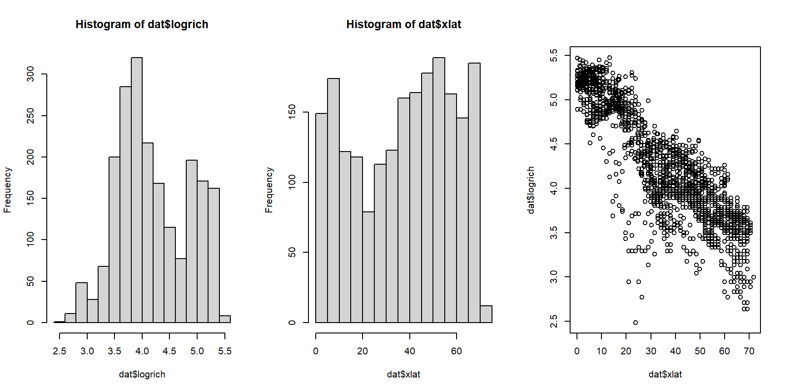

5.4 Poisson GLM for counts
This is one of several sections exploring some common GLM applications. For most of these applications we will work through two examples. First, an analysis of simulated data, and second, an analysis of a real dataset. Simulating a dataset suitable for an analysis is an excellent way to learn about the analysis method, because it helps you see the relationship between the data-generating process and the analysis.
This module explores GLMs for count data. Count data are exactly what they sound like: values resulting from counting things. Count data take the form of non-negative integers. Non-negative integers, however, are not necessarily count data. For example, values can be rounded to the nearest integer, but they will not be counts.
Count data are usually well-modeled by a kind of GLM called Poisson regression. The “Poisson” part comes from the Poisson distribution, which describes counts and events that occur at a constant rate. The “regression” part of the name comes from the fact that the technique involves a linear relationship between the predictors and some function of the response.
In the next section we will explore another class of models for count data that do not follow the Poisson distribution. These models, the quasi-Poisson and negative binomial GLMs, have an extra term that accounts for overdispersion.
Poisson regression describes a GLM with a Poisson family and log link function. As with other GLMs, we do not fit an equation for the response values directly. Instead, we fit a linear model for the log of the expected value, and assume that the actual observed counts follow a Poisson distribution. To see what this means in practice, let’s simulate some data that might be modeled by Poisson regression.
5.4.1 Example with simulated data
In this example Poisson GLM workflow we will simulate some data, analyze it, and interpret the results.
# random number seed for reproducibility
set.seed(42)
# sample size
n <- 50
# coefficients
beta0 <- 0.9
beta1 <- 0.2
# x values
x <- runif(n, 0, 10)
# linear predictor
eta <- beta0 + beta1 * x
# inverse link function
lambda <- exp(eta)
# response variable
y <- rpois(n, lambda)
dat <- data.frame(x=x, y=y)
plot(x,y)
The relationship between Y and X looks linear, but because we are clever biologists, we know that linear models are not appropriate for two reasons. First, linear models predict continuous responses, and counts are not continuous (they are discrete). Second, linear models can predict negative responses, and counts cannot be negative. So, we will try Poisson regression because the Poisson distribution is so good at handling counts.
mod1 <- glm(y~x, data=dat, family=poisson)
summary(mod1)##
## Call:
## glm(formula = y ~ x, family = poisson, data = dat)
##
## Deviance Residuals:
## Min 1Q Median 3Q Max
## -2.06284 -0.46194 -0.06797 0.39314 2.18201
##
## Coefficients:
## Estimate Std. Error z value Pr(>|z|)
## (Intercept) 0.9258 0.1447 6.397 1.59e-10 ***
## x 0.2089 0.0183 11.415 < 2e-16 ***
## ---
## Signif. codes: 0 '***' 0.001 '**' 0.01 '*' 0.05 '.' 0.1 ' ' 1
##
## (Dispersion parameter for poisson family taken to be 1)
##
## Null deviance: 194.34 on 49 degrees of freedom
## Residual deviance: 37.16 on 48 degrees of freedom
## AIC: 241.37
##
## Number of Fisher Scoring iterations: 4The estimated parameters are very close to the correct values! The model also explains a lot of the variation in Y, as seen by the pseudo-R2 of > 0.8.
1-mod1$deviance/mod1$null.deviance## [1] 0.8087827The next step is to plot predicted values and the original data. If you have visited any of the other modules in this course, you should be familiar with the process by now. Even if you feel comfortable generating model predictions, there are some wrinkles to be aware of when working with non-normal models. We’re going to present predictions in several ways, to illustrate the relationship between the GLM and the data.
First, let’s present the 95% prediction interval (PI). The PI is an interval in which 95% of values should fall. It is necessarily larger than the 95% confidence interval (CI), which is the interval where the expected value should fall. Both intervals have their uses; just be clear about which one you are using.
Notice that we do not request se.fit=TRUE in the commands below, because it is not needed to get the PI of the Poisson distribution. This is because for the Poisson distribution the expected value, mean, and variance are all the same value (i.e., \(\lambda=\mu=\sigma^2\)).
n <- 50
px <- seq(min(dat$x), max(dat$x), length=n)
pred1 <- predict(mod1,
newdata=data.frame(x=px),
type="response")
mn1 <- pred1
lo1 <- qpois(0.025, mn1)
up1 <- qpois(0.975, mn1)
# make the plot:
plot(x, y, xlab="X", ylab="Y", type="n",
ylim=c(0, 30))
points(px, lo1, type="l", lty=2, lwd=2)
points(px, up1, type="l", lty=2, lwd=2)
points(px, mn1, type="l", lwd=2)
points(x,y)
Notice anything odd? The 95% prediction limits increase in discrete steps rather than as smooth curves. This is because we calculated them as quantiles from the Poisson distribution, which can only take on integer values. This means that the PI can only be bounded by integer values. The plotted PI is correct, but looks odd because we are used to seeing smooth curves. It also looks odd because it includes most (if not all) values, which CI do not do.
The second method is a more traditional 95% CI. Unlike the PI, the CI shows the uncertainty associated with the expected value. This means that the relationship between the PI and CI is similar to the relationship between the SD and SE.
pred2 <- predict(mod1,
newdata=data.frame(x=px),
type="response", se.fit=TRUE)
mn2 <- pred2$fit
lo2 <- mn2 - 1.96*pred2$se.fit
up2 <- mn2 + 1.96*pred2$se.fit
plot(x, y, xlab="X", ylab="Y", type="n",
ylim=c(0, 30))
points(px, lo2, type="l", lty=2, lwd=2)
points(px, up2, type="l", lty=2, lwd=2)
points(px, mn2, type="l", lwd=2)
points(x,y)
Given that the Poisson distribution is defined by a single parameter that is both the mean and variance, it is worth wondering what the SE estimated by se.fit=TRUE in the command that created pred2 really is (after all, it is separate from the mean!). In a nutshell, it is the SE of the expected value assuming that the expected value follows a normal distribution. This assumption turns out to be appropriate for many situations. Taking advantage of the properties of the normal distribution allowed us to use \(\pm\) 1.96 SE to approximate the 95% CI (verify this with qnorm(c(0.025, 0.975))). Alternatively, we could have used:
# not run:
lo2 <- qnorm(0.025, mn2, pred2$se.fit)
up2 <- qnorm(0.975, mn2, pred2$se.fit)Finally, we could have also generated predictions on the link scale and transformed them to the response scale. This method is often safer than using type="response because the resulting predictions are guaranteed to be inside the domain of the response variable.
# getting CI from link scale
pred3 <- predict(mod1,
newdata=data.frame(x=px),
type="link", se.fit=TRUE)
mn3 <- pred3$fit
lo3 <- mn3 - 1.96*pred3$se.fit
up3 <- mn3 + 1.96*pred3$se.fit
# use inverse link function from model object
mn3 <- mod1$family$linkinv(mn3)
lo3 <- mod1$family$linkinv(lo3)
up3 <- mod1$family$linkinv(up3)
# make plot
plot(x, y, xlab="X", ylab="Y", type="n",
ylim=c(0, 30))
points(px, lo3, type="l", lty=2, lwd=2)
points(px, up3, type="l", lty=2, lwd=2)
points(px, mn3, type="l", lwd=2)
points(x,y)
5.4.2 Example with real data
The study of statistical patterns in biodiversity, abundance, and ecological function across large spatial scales is called macroecology. Rather than study individual species and sites, macroecologists integrate data across many studies and databases to search for broadly applicable patterns. Faurby et al. (2018) compiled basic biogeographic, conservation, and life history data for >5800 species of mammals and published them as the database PHYLACINE. We will use the data from PHYLACINE to explore the relationship between mammal species richness and geography in the western hemisphere. The figure below shows the species richness data at 2075 systematically placed points in mainland North America and South America.

The dataset mammal_data_2021-09-08.csv contains mammal species richness at about 2000 locations throughout North and South America. These points were defined by longitude and latitude in a regular grid that covered both continents. The PHYLACINE database was then queried to determine which species’ ranges overlapped each point. The result is a data frame with the species richness of each point related to its geographic coordinates58.
First, download the data and put it in your R home directory. We’ll do some data exploration before jumping into the analysis.
dat <- read.csv("mammal_data_2021-09-08.csv", header=TRUE)
head(dat)## X long lat rich
## 1 1 -72.50909 -52.49019 58
## 2 2 -70.99915 -52.49019 56
## 3 3 -73.26407 -51.18254 55
## 4 4 -71.75412 -51.18254 31
## 5 5 -70.24417 -51.18254 24
## 6 6 -74.01904 -49.87489 43par(mfrow=c(1,3))
hist(dat$rich)
hist(dat$lat)
plot(dat$lat, dat$rich)
At first glance, it looks like mammal species richness peaks near the equator (0 = equator, + = north latitude, and - = south latitude). It also looks like the response to latitude is the same whether going north or south. So, let’s use the absolute value of latitude instead. While we’re at it, let’s try out a log-transform on richness. This makes sense because richness (1) appears highly right-skewed; and (2) must be nonnegative.
# transform:
dat$xlat <- abs(dat$lat)
dat$logrich <- log(dat$rich)
# look again:
par(mfrow=c(1,3))
hist(dat$logrich)
hist(dat$xlat)
plot(dat$xlat, dat$logrich)
The rightmost plot shows that there is a linear relationship between the log-transformed response variable, which represents counts, and the explanatory variable. This means we should try modeling this relationship with a GLM, with a Poisson family and log link function. The Poisson distribution is because the data are counts. The log link is used because it is the canonical link function for the Poisson family.
mod1 <- glm(rich~xlat, data=dat, family=poisson)
# check model terms:
summary(mod1)##
## Call:
## glm(formula = rich ~ xlat, family = poisson, data = dat)
##
## Deviance Residuals:
## Min 1Q Median 3Q Max
## -11.2645 -1.4664 0.0785 1.4371 8.4076
##
## Coefficients:
## Estimate Std. Error z value Pr(>|z|)
## (Intercept) 5.2859143 0.0038991 1355.7 <2e-16 ***
## xlat -0.0282742 0.0001219 -231.9 <2e-16 ***
## ---
## Signif. codes: 0 '***' 0.001 '**' 0.01 '*' 0.05 '.' 0.1 ' ' 1
##
## (Dispersion parameter for poisson family taken to be 1)
##
## Null deviance: 69333 on 2074 degrees of freedom
## Residual deviance: 11653 on 2073 degrees of freedom
## AIC: 24186
##
## Number of Fisher Scoring iterations: 4# pseudo R squared:
1-mod1$deviance/mod1$null.deviance## [1] 0.8319267As before, we want to present the data with the predictions of the model, and the 95% CI of the predictions. As before, we’ll explore different ways of calculating and presenting uncertainty about the predictions. First, we’ll use the Poisson distribution to get the 95% prediction interval (the interval where 95% of values should fall). Then, we’ll use the normal approximation to get the 95% confidence interval of \(\lambda\) (i.e., the interval where we are 95% certain that the true \(\lambda\) falls).
n <- 100
px <- seq(min(dat$xlat), max(dat$xlat), length=n)
dx <- data.frame(xlat=px)
pred1 <- predict(mod1,
newdata=data.frame(dx),
type="response", se.fit=TRUE)
mn1 <- pred1$fit
# Poisson prediction interval:
lo1 <- qpois(0.025, mn1)
up1 <- qpois(0.975, mn1)
# normal approximation confidence interval:
pred2 <- predict(mod1,
newdata=data.frame(dx),
type="link", se.fit=TRUE)
mn2 <- pred2$fit
lo2 <- qnorm(0.025, mn2, pred2$se.fit)
up2 <- qnorm(0.975, mn2, pred2$se.fit)
# inverse link function
mn2 <- mod1$family$linkinv(mn2)
lo2 <- mod1$family$linkinv(lo2)
up2 <- mod1$family$linkinv(up2)
par(mfrow=c(1,2), cex.lab=1.3, cex.main=1.3, cex.axis=1.3)
plot(dat$xlat, dat$rich,
main="Poisson 95% PI",
xlab="Absolute latitude (deg.)",
ylab="Species richness (R)")
points(px, lo1, type="l", col="red", lwd=3, lty=2)
points(px, up1, type="l", col="red", lwd=3, lty=2)
points(px, mn1, type="l", col="red", lwd=3)
plot(dat$xlat, dat$rich,
main="Normal approx. 95% CI",
xlab="Absolute latitude (deg.)",
ylab="Species richness (R)")
points(px, lo2, type="l", col="red", lwd=3, lty=2)
points(px, up2, type="l", col="red", lwd=3, lty=2)
points(px, mn1, type="l", col="red", lwd=3)
The expected value \(\lambda\) is the same for both uncertainty estimations. As expected, the PI is wider than the CI. Why is the CI so narrow? Remember that the SE is proportional to the inverse square root of the sample size (\(SE\left(x\right)=\sigma/\sqrt{n}\)). The n of this model was very large, 2075 (try nrow(dat)). A model fit with smaller n would have a wider CI. We can see this for ourselves by refitting the model with fewer observations.
# number of x values for CI
n.pred <- 100
# number of observations in each simulation
use.n <- 1:6*10
n.sims <- length(use.n)
# lists to hold data, models, and predicted values/CI
mod.list <- vector("list", n.sims)
dat.list <- mod.list
pred.list <- mod.list
# fit models and calculate predictions in a loop
for(i in 1:n.sims){
# randomly select rows from full dataset
use.rows <- sample(1:nrow(dat), use.n[i])
curr.d <- dat[use.rows,]
# fit model to current subset of data
curr.m <- glm(rich~xlat, data=curr.d, family=poisson)
# calculate predictions on current model
curr.px <- seq(min(curr.d$xlat),
max(curr.d$xlat),
length=n.pred)
curr.pr <- predict(curr.m,
data.frame(xlat=px),
type="link",
se.fit=TRUE)
# store mean, upper, and lower conf. limits in a matrix
curr.ci <- matrix(NA, nrow=n.pred, ncol=3)
curr.ci[,1] <- curr.pr$fit
curr.ci[,2] <- qnorm(0.025, curr.ci[,1], curr.pr$se.fit)
curr.ci[,3] <- qnorm(0.975, curr.ci[,1], curr.pr$se.fit)
curr.ci[,1] <- curr.m$family$linkinv(curr.ci[,1])
curr.ci[,2] <- curr.m$family$linkinv(curr.ci[,2])
curr.ci[,3] <- curr.m$family$linkinv(curr.ci[,3])
# save everything to the lists
# (note double brackets for accessing elements of a list)
mod.list[[i]] <- curr.m
dat.list[[i]] <- curr.d
pred.list[[i]] <- curr.ci
}Inspect the outputs to see what the simulations did. Now let’s plot the predicted values and CI for the models fitted to subsets of the data.
par(mfrow=c(2,3), mar=c(5.1, 5.1, 5.1, 5.1),
bty="n", lend=1, las=1,
cex.lab=1.3, cex.axis=1.3)
for(i in 1:n.sims){
plot(dat.list[[i]]$xlat, dat.list[[i]]$rich,
ylim=c(0, 200),
xlab="Abs. latitude",
ylab="Species richness")
points(px, pred.list[[i]][,2],
type="l", col="red", lwd=3, lty=2)
points(px, pred.list[[i]][,3],
type="l", col="red", lwd=3, lty=2)
points(px, pred.list[[i]][,1],
type="l", col="red", lwd=3)
title(main=paste("n =", use.n[i]), adj=0)
}
The simulations show that the 95% CI of \(\lambda\) narrows down very quickly as sample size increases from 10 to 60. No wonder we can’t even see the interval when the model is fit with 2075 observations!
Just as linear regression can be extended to multiple linear regression, Poisson regression can be extended with additional predictor variables. Remember how earlier we lumped the northern and southern hemispheres together by taking the absolute value of latitude? Let’s see if treating the hemispheres separately can improve the model fit.
First, make a factor that will identify the hemisphere of each observation.
dat$hemi <- ifelse(dat$lat < 0, "south", "north")Next, refit the model with the new variable. We’ll test whether latitude and hemisphere interact. In other words, we’ll see whether the relationship between latitude and species richness varies by hemisphere.
mod2 <- glm(rich~xlat*hemi, data=dat, family=poisson)
# check model terms:
summary(mod2)##
## Call:
## glm(formula = rich ~ xlat * hemi, family = poisson, data = dat)
##
## Deviance Residuals:
## Min 1Q Median 3Q Max
## -10.4317 -1.5948 -0.0442 1.3691 9.5437
##
## Coefficients:
## Estimate Std. Error z value Pr(>|z|)
## (Intercept) 5.3418617 0.0063816 837.073 <2e-16 ***
## xlat -0.0287144 0.0001573 -182.532 <2e-16 ***
## hemisouth -0.0163170 0.0085718 -1.904 0.057 .
## xlat:hemisouth -0.0057775 0.0003667 -15.757 <2e-16 ***
## ---
## Signif. codes: 0 '***' 0.001 '**' 0.01 '*' 0.05 '.' 0.1 ' ' 1
##
## (Dispersion parameter for poisson family taken to be 1)
##
## Null deviance: 69333 on 2074 degrees of freedom
## Residual deviance: 10964 on 2071 degrees of freedom
## AIC: 23501
##
## Number of Fisher Scoring iterations: 4Sure enough, the interaction appears significant. The coefficients tell us that in the baseline group (northern hemisphere), \(\log(R)\) decreases by 0.0287 for every extra degree of latitude away from the equator. In the southern hemisphere, the effect is stronger: for every additional degree of latitude, \(\log(R)\) decreases by \((-0.0287) + (-0.0058) = 0.0345\). The coefficient for the interaction xlat:hemisouth is the effect on the slope (xlat) of being in a group other than the baseline. The fact that the effect of hemisouth was nonsignificant just means that the intercept of the relationship for the southern hemisphere is not significantly different than the intercept of the relationship for the northern hemisphere (can you think of a biological reason why this should be the case?).
Did the additional term improve the model? Not much. Recall that the model without the interaction had a pseudo-R2 of about 0.832. Still, the new model appears to be an improvement because of its much smaller AIC.
# pseudo R squared:
1-mod2$deviance/mod2$null.deviance## [1] 0.8418692AIC(mod1, mod2)## df AIC
## mod1 2 24186.10
## mod2 4 23500.75We can confirm that model 2 is a better fit using a likelihood ratio test (LR test). The easiest way is with function lrtest() in package lmtest. A LR test tests the null hypothesis that the ratio of the likelihood functions of two models is equal to 1 (or, that the natural log of this ratio is different than 0). LR tests can be used to compare GLMs that are nested: the more complicated model can be converted into the simpler model by constraining some of its parameters. In our example, model 2 can be converted into model 1 by setting the coefficients for hemisphere and latitude × hemisphere to 0. Thus, model 1 is nested within model 2. If models are not nested, then the LR test will not be valid.
library(lmtest)## Loading required package: zoo##
## Attaching package: 'zoo'## The following objects are masked from 'package:base':
##
## as.Date, as.Date.numeric##
## Attaching package: 'lmtest'## The following object is masked _by_ '.GlobalEnv':
##
## iplrtest(mod1, mod2)## Likelihood ratio test
##
## Model 1: rich ~ xlat
## Model 2: rich ~ xlat * hemi
## #Df LogLik Df Chisq Pr(>Chisq)
## 1 2 -12091
## 2 4 -11746 2 689.35 < 2.2e-16 ***
## ---
## Signif. codes: 0 '***' 0.001 '**' 0.01 '*' 0.05 '.' 0.1 ' ' 1The fact that the LR test was significant shows that the fit of model 2 is significantly better than that of model 1, after penalizing for the number of parameters.
As always, let’s calculate the model predictions and present them with the original data. We’ll skip presenting the 95% CI, because it was so small in the previous example and won’t tell us much. In the code below we need to define predictor variables in the range actually seen for each factor.
n <- 100
flag <- which(dat$hemi=="south")
px1 <- data.frame(
hemi="south",
xlat=seq(min(dat$xlat[flag]),
max(dat$xlat[flag]), length=n))
px2 <- data.frame(
hemi="north",
xlat=seq(min(dat$xlat[-flag]),
max(dat$xlat[-flag]), length=n))
dx <- rbind(px1, px2)
pred2 <- predict(mod2,
newdata=data.frame(dx),
type="link")
mn2 <- mod2$family$linkinv(pred2)
par(mfrow=c(1,1), cex.lab=1.3, cex.axis=1.3,
mar=c(5.1, 5.1, 1.1, 1.1),
bty="n", lend=1, las=1)
plot(dat$xlat, dat$rich, pch=16,
col=ifelse(dat$hemi == "south", "#FF000020", "#0000FF20"),
xlab="Absolute latitude (deg.)",
ylab="Species richness (R)")
flag1 <- which(dx$hemi == "south")
flag2 <- which(dx$hemi != "south")
points(px1$xlat, mn2[flag1], type="l", col="red", lwd=3)
points(px2$xlat, mn2[flag2], type="l", col="blue", lwd=3)
legend("topright",
legend=c("Northern hemisphere", "Southern hemisphere"),
lwd=3, col=c("blue", "red"), bty="n", cex=1.3)
The figure below above that species richness falls off with distance from the equator slightly faster in the southern hemisphere than in the northern hemisphere.